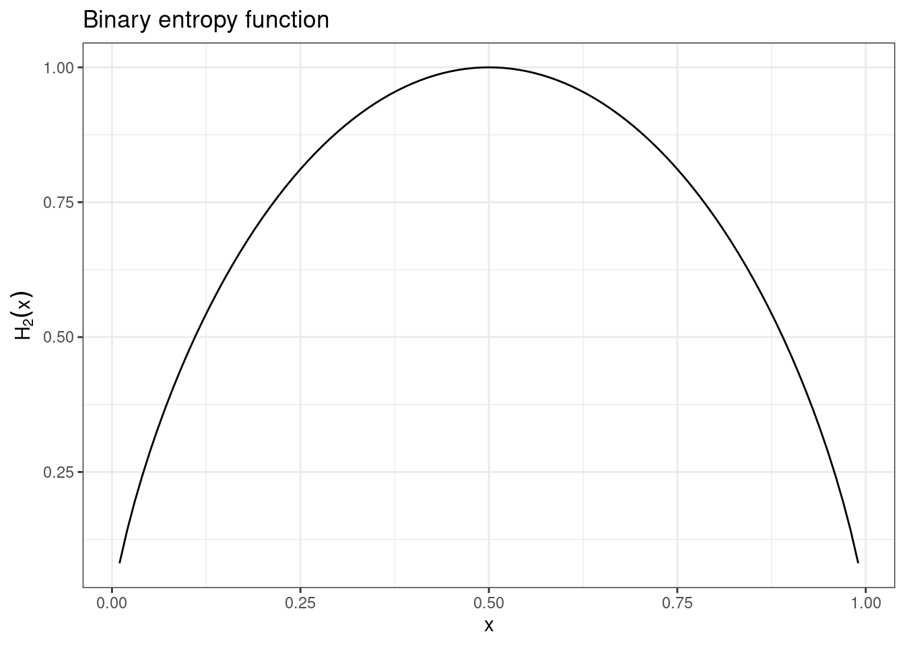
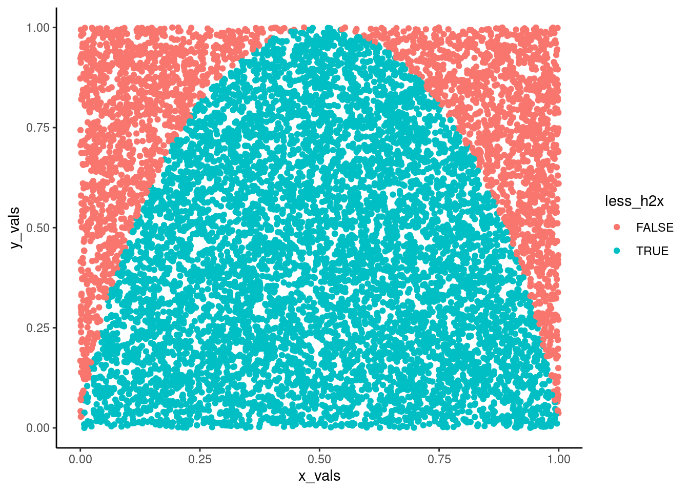
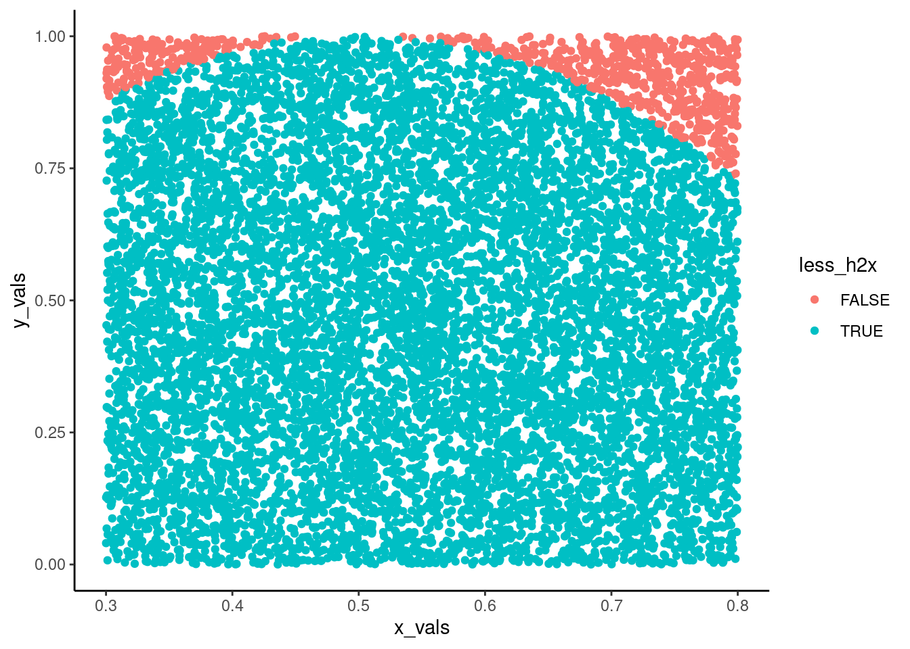

I learned the binary entropy function from MacKay’s 2003 Information Theory, Inference, and Learning Algorithms, where it is used to derive approximations for combinations in evaluating the probabilities of error in different repetition codes (basically codes that rely on transmitting the same bit multiple times to minimize risk of transmission errors).
The formula for the function looks like this(MacKay 2003: 2): \[
H_2(x) = xlog \frac{1}{x} + (1 - x)log \frac{1}{1-x}
\]
What I want to do here is to build an Monte Carlo rejection simulation to integrate the function. Why use Monte Carlo? Because I’m too thick to integrate this thing. Why a rejection Monte Carlo? Because, as we’ll see, it’s dead easy to set. What is a Monte Carlo simulation? It’s a stochastic method of evaluating area under a curve - the rejection approach relies on drawing a known size box around the area over which we want to integrate, dropping a whole lot of dots on it, and then checking what proportion ended up below the curve.
However, before getting to building the simulation lets first write a function for the binary entropy function and plot the beast.
### Binary entropy function.### This function takes on an x between zero and one and returns the H2(x) of this valueh2x <-function (x){ x *log2(1/x) + (1-x) *log2(1/(1-x)) #Note that the binary entropy function }h2x_df <-data.frame(x =seq(0.01, 0.99, 0.01), h2x =h2x(seq(0.01, 0.99, 0.01)))library(ggplot2)ggplot(h2x_df, aes(x = x, y = h2x)) +geom_line() +theme_bw() +labs(title ="Binary entropy function", ) +ylab(bquote(H[2](x)))

As we can see the function forms an arc that starts at zero, ends at one and has a maximum value of one. This maximum value will prove helpful when building the Monte Carlo simulation, because now we can set out simulation “box” with a y maximum of 1. Why do we want to put the value as close to the function maximum as possible? We want the box to be as small as possible (more dots end up under the curve and thus we get better accuracy), but it can’t go below the maximum of the function over the parameters of interest - if it does, we’ll underestimate the area!
The simulation
Now that we know what the function looks like, lets build the sampler. Lets iterate the design a little. In the first stage, we will just write out the code that gives us the result.To make things a little more interesting, we will vectorize the draws rather than use traditional for Loops (for a For Loopy version have a look at Lynch 2007). Next we’ll wrap it into a function. Last, we’ll modify the function, so that it can attain an accuracy level we want from it automatically.
OK, so lets get onto the first step. Building the sampler itself.
library(dplyr)
Attaching package: 'dplyr'
The following objects are masked from 'package:stats':
filter, lag
The following objects are masked from 'package:base':
intersect, setdiff, setequal, union
##library(purrr) - I thought I'd need purr. Then i realized how simple this is if we vectorize :)##First set up a base DF, with 10000 sims.sampler_results <-data.frame(x_vals =runif(10000, 0, 1), y_vals =runif(10000, 0, 1)) %>%##Next check if the values are less than the H2(x) valuesmutate(h2x_vals =h2x(x_vals),less_h2x =if_else(y_vals <= h2x_vals, TRUE, FALSE) #I broke this up into two steps, so I can check if the intermediate steps work the way they should :) )
As the area covered by the box equals to one, the ratio of dots “under” the curve to the total number of dots generated is the actual result.
We can also visualize the area by plotting the individual dots passed to the sampler:
sampler_results %>%ggplot(aes(x = x_vals, y = y_vals, color = less_h2x)) +geom_point() +theme_classic()

So the sampler is working. Now lets turn it into a function, so we can begin exploring it further.
sample_h2x <-function (x1, x2, n_sims){### Takes on values of x and returns the H2(x) integral between those values.### Assumes x1 < x2 and 0 < x1, x2 < 1 sampler_results <-data.frame(x_vals =runif(n_sims, x1, x2), y_vals =runif(n_sims, 0, 1)) %>%##Next check if the values are less than the H2(x) valuesmutate(h2x_vals =h2x(x_vals),less_h2x =if_else(y_vals <= h2x_vals, TRUE, FALSE) #I broke this up into two steps, so I can check if the intermediate steps work the way they should :) ) sampler_results}#Run a visual testsample_h2x(0.3, 0.8, 100) %>%ggplot(aes(x = x_vals, y = y_vals, color = less_h2x)) +geom_point() +theme_classic()

sample_h2x(0.3, 0.8, 100000) %>%ggplot(aes(x = x_vals, y = y_vals, color = less_h2x)) +geom_point() +theme_classic()
So, we now have a working core sampler, what we do not have is something to produce results. This will require building a little more.
Our general approach here will be:
* Build a function that takes the simulation table produced by the sampler
* Summarizes this information in terms of area under the curve
* Build a wrapper function for the two.
The reason for having two functions and a wrapper rather than a function running on top of the sampler, is that I want to avoid nesting functions. Also, it means that we can then use those seperately if need be (and there might be once we start getting deeper into the project).
read_h2x_mc <-function (mc_results, x1, x2, y1 =0, y2 =1){###The function takes on the raw MC results and returns the area under the curve between X1 and x2. area_checked <- (x2 - x1) * (y2 - y1) result <- mc_results %>%summarize(n_total =n(),n_under =sum(less_h2x),area_under_curve = area_checked * n_under / n_total ) %>%pull(area_under_curve)round(result[1], 3) #Return as a single value, not a vector}##Testsample_h2x(0, 1, 10000) %>%read_h2x_mc(x1 =0, x2 =1)
[1] 0.721
wrap_h2x_mc <-function (x1, x2, y1 =0, y2 =0, n_sims){###Wrapper function chaining the actual MC simulation and the result readersample_h2x(x1, x2, n_sims) %>%read_h2x_mc(x1, x2)}##Testwrap_h2x_mc(x1=0.2, x2 =0.35, n_sims =5000)
[1] 0.128
We thus have a function that takes on the x-values for which we want to calculate the integral of H2(x) and returns an MC estimate of the area under the curve. However, because we are doing Monte Carlo simulations, the result is always a little off from the actual result. We can minimize this discrepancy by increasing the sample size, however this comes at the cost of having to create more simulated results, which in turns translates to greater computational requirements. Does it matter for this kind of project? Not really, but it would be fun to finish with something that attains a given level of accuracy by itself, while also modulating the height of the envelope (remember, the more space above the curve gets samples, the lower the simulation efficiency!).
To do this we shall write a new, more complex wrapper function. What it will take on in addition is the target standard deviation of a group of MC simulations, as well as the x1 and x2 constraints. What it will return is the mean value of five simulations, alongside the standard deviation of the group - which has to be less than the target set at the beginning. What it will also need to do is figure out the maximum value of y for the given x1/x2 and use that to set the simulation parameters. Last, we want it to get there without any extra input.
The way we can do this is through the following steps: 1. First determine the value of y1 2. Initiate a while loop that looks for getting the SD level we want. 3. Once it gets desired precision, break out of the while loop and return the result.
Actually, to make this a little more fun, lets set the number of individual simulation to be a variable as well. Thus, the function we are after looks something like this:
wrap_control_h2x_mc <-function (x1, x2, target_sd, num_mcs){### The function takes on arguments relating to the range over which we want to integrate and returns the distribution of num_mcs results, with an SD of less than the target_sd.### Assumes x1>x2## Calculate max y y2 <-data.frame(x_values =seq(x1, x2, length.out =100)) %>%mutate(y_values =h2x(x_values)) %>%summarize(max_y =max(y_values, na.rm =TRUE)) %>%pull(max_y) y2 <-min(1, y2 +0.01) #What we want to do here is make sure that the upper sampler level is over the actual maximum within a given range## Set up the vector to track the different MC results n_sims <-1000 mc_sigma <-20#Set a too high starting MC sigma to avoid the while loop from not workingwhile (mc_sigma > target_sd) { mc_results <-c()for (i in1:num_mcs) { indiv_mc_result <-sample_h2x(x1, x2, n_sims) %>%read_h2x_mc(x1, x2, y1 =0, y2 = y2) mc_results <-c(mc_results, indiv_mc_result) } n_sims <- n_sims *2 mc_sigma <-sd(mc_results) mc_mu <-mean(mc_results) } final_result <-c(mc_mu, mc_sigma, n_sims)names(final_result) <-c("mc_mu", "mc_sigma", "n_sims") final_result}##Testwrap_control_h2x_mc(x1 =0, x2=1, target_sd =0.001, num_mcs =5)